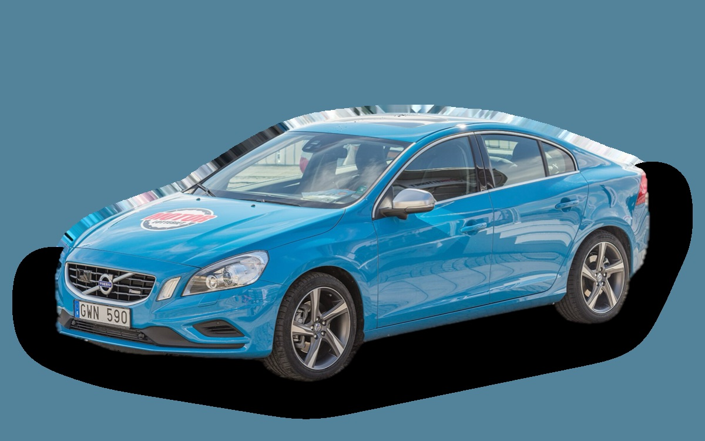

What does a Volvo S60 II cost per month?
A 2015 Volvo S60 II costs about SEK 3,573 a month, all in.
SEK 3,573per month, 2015 model
SEK 115,000price, 2015 model
SEK 312,000last new price
Cvalue grade (2015)


Monthly cost by model year
| Model year | Version in the calculation | Price | Per month | Grade |
|---|---|---|---|---|
| 2018 | D4 181, Kinetic | SEK 155,000 | SEK 3,722 | C |
| 2015 | D4 181, Kinetic | SEK 115,000 | SEK 3,573 | C |
| 2012 | D4 181, Kinetic | SEK 86,000 | SEK 3,397 | D |
Based on 5 years of ownership and 12,500 km a year, with fuel prices from 2026-10-22. The monthly cost includes depreciation, fuel, servicing and repairs, insurance and road tax.
How the cost splits for a 2015 car
- Depreciation: SEK 724/mo
- Fuel: SEK 1,502/mo
- Servicing and repairs: SEK 970/mo
- Insurance: SEK 248/mo
- Road tax: SEK 128/mo
Used prices in ads
| Model year | Median price | Ads | Typical mileage |
|---|---|---|---|
| 2018 | SEK 169,800 | 10 | 126,000 km |
| 2017 | SEK 154,900 | 10 | 133,000 km |
| 2016 | SEK 149,000 | 10 | 188,000 km |
| 2015 | SEK 119,900 | 18 | 220,000 km |
| 2014 | SEK 90,000 | 13 | 247,000 km |
| 2013 | SEK 95,500 | 12 | 224,000 km |
| 2012 | SEK 87,400 | 20 | 207,000 km |
| 2011 | SEK 78,100 | 47 | 224,000 km |
The median price in Swedish ads by model year in October 2026 (source: Blocket). Ad prices are asking prices, and the final price may be lower.
Engines and versions
| Engine | Fuel | Power | 0–100 km/h | Consumption (WLTP) | Range | Model years | Extra cost |
|---|---|---|---|---|---|---|---|
| D4 181 | Diesel | 181 hp | 7.6 s | 4.5 l/100 km | – | 2011–2018 | – |
| T4 190 | Petrol | 190 hp | 7.3 s | 6.4 l/100 km | – | 2011–2018 | −SEK 35,900 |
| T6 306 | Petrol | 306 hp | 5.9 s | 7.6 l/100 km | – | 2011–2018 | +SEK 40,100 |
- Trim: Kinetic, Summum (+SEK 32,800)
Facts
- Body
- Sedan
- Model years
- 2011–2018
- Last new price
- SEK 312,000
- Boot
- 380 litres
- Euro NCAP
- 5 of 5 stars
- New-car warranty
- 3 years
- Reliability
- 3 of 5
- Comprehensive insurance, estimate
- SEK 6,000/yr
- Servicing, estimate
- SEK 4,300/yr
Common faults to watch for
- Injectors and swirl flaps (five-cylinder diesel), repair about SEK 7,000
- Timing belt and water pump ruined by an oil leak, repair about SEK 11,000
- Particulate filter and EGR (diesel), repair about SEK 9,000
- Oil consumption and timing chain tensioner (Drive-E petrol), repair about SEK 16,000
- Timing chain (six-cylinder), repair about SEK 23,000
The faults apply to some engines and model years. The calculator works out the risk for the exact version you choose.
Pros and cons
Pro
Sporty, safe sedan that's cheap used.
Con
Tight rear seat and a small boot.
Similar cars
 Hyundai Ioniq 6SEK 3,504/mo as a 2023 model
Hyundai Ioniq 6SEK 3,504/mo as a 2023 model Saab 9-3 Sport SedanSEK 3,482/mo as a 2008 model
Saab 9-3 Sport SedanSEK 3,482/mo as a 2008 model Volvo S80SEK 3,698/mo as a 2013 model
Volvo S80SEK 3,698/mo as a 2013 model Saab 9-5 SedanSEK 3,790/mo as a 2006 model
Saab 9-5 SedanSEK 3,790/mo as a 2006 model Polestar 2SEK 3,241/mo as a 2023 model
Polestar 2SEK 3,241/mo as a 2023 model BMW i4SEK 3,906/mo as a 2023 model
BMW i4SEK 3,906/mo as a 2023 model
Updated 2026-10-27 · ad data Oct 2026